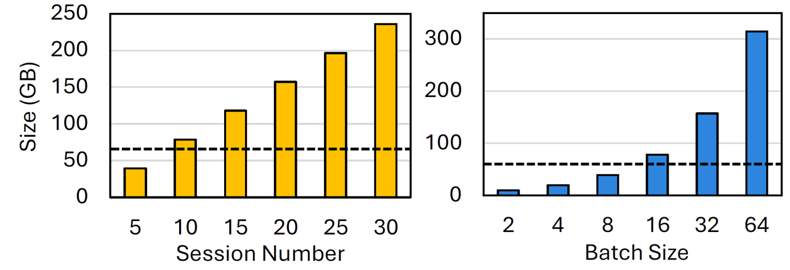
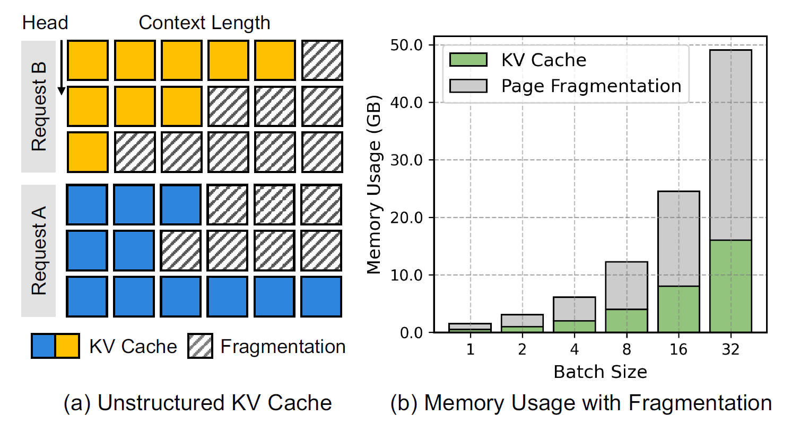
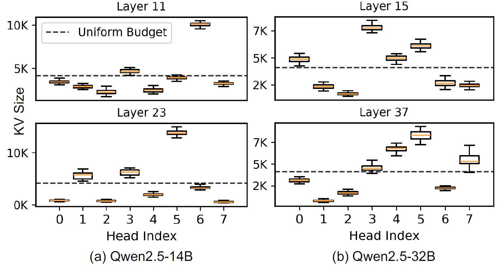
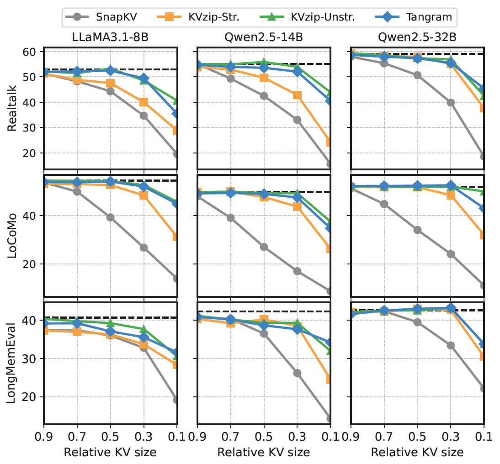
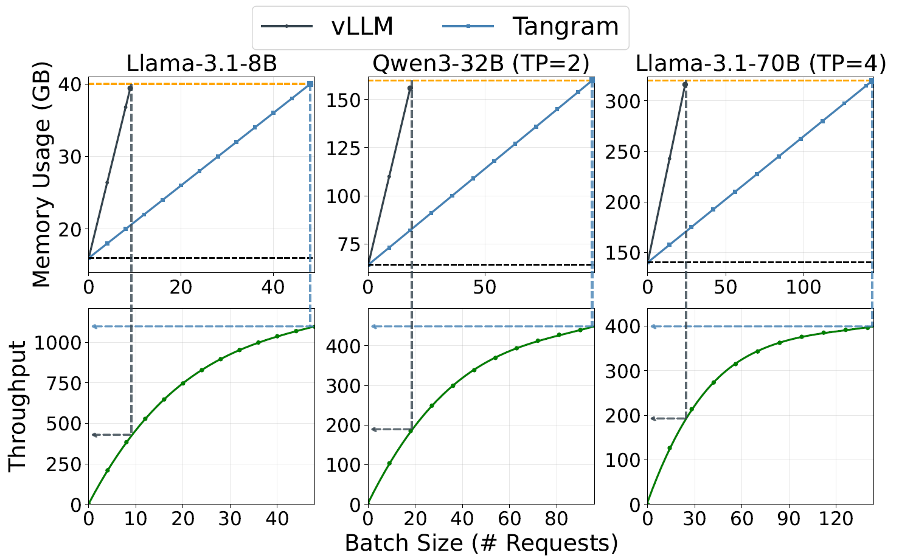

2~9x
Throughput Improvement
9x
Memory Savings
<1%
Accuracy Drop
Tested on Llama-3 and Qwen3 models across Realtalk, LoCoMo, and LongMemEval benchmarks, TANGRAM demonstrates that it can preserve conversational accuracy while significantly outperforming state-of-the-art serving frameworks like vLLM.
As Large Language Models (LLMs) evolve into persistent personal assistants, the ability to maintain Long-Term Conversation (LTC) has become critical for delivering consistent, personalized user experiences. However, preserving this extensive dialogue history causes the Key-Value (KV) cache to scale linearly with each turn, imposing significant pressure on GPU memory capacity and bandwidth. Consequently, KV cache compression becomes essential for cost-efficient serving. Yet existing compression methods largely assume uniform KV lengths across layers and heads—an assumption we show is detrimental in multi-turn scenarios, where discarding context-essential information degrades model accuracy. While non-uniform KV Cache compression preserves accuracy by allocating heterogeneous budgets, it disrupts the uniform memory layout relied upon by modern serving systems. This misalignment leads to severe memory fragmentation under paged allocation, preventing theoretical compression rates from translating into actual memory savings. This paper presents TANGRAM, a novel LLM serving system designed to make non-uniform KV caches practical. TANGRAM addresses system inefficiencies through three core techniques: (1) Profile-Guided Fixed Allocation converts dynamic compression rates into deterministic budgets to eliminate scheduling stalls; (2) Head-Grouped PagedAttention backed by a Vectorized Block Table decouples memory management across attention heads to resolve memory fragmentation without inflating metadata overhead; and (3) Ahead-of-Time (AOT) Load Balancing leverages static budget profiles to ensure uniform GPU utilization without runtime planning costs. Our evaluation on representative multi-turn workloads demonstrates that TANGRAM improves throughput by up to 2x with the same memory footprint and achieves up to 9x memory savings, while preserving conversational accuracy.

Long-Term Conversation (LTC) demands an overwhelming volume of KV cache to maintain context over extended dialogues. Even with a moderate batch size of 16, this massive footprint quickly surpasses the size of the model weights themselves, creating a critical memory bottleneck. This unsustainable memory pressure forces systems to drastically restrict concurrent batch sizes, leading to resource saturation and a severe decline in serving throughput.

LTC workloads exhibit Head-wise Heterogeneity; critical information is fragmented into specific, irregular positions throughout the history[cite: 130, 171]. Unlike structured eviction which forces uniform retention, Unstructured KV Eviction selectively preserves these head-specific "needles," maintaining over 90% accuracy while achieving significantly higher compression rates[cite: 24, 176].

Unstructured KV eviction is algorithmically superior, but it breaks the Uniform Homogeneity Assumption relied upon by modern serving systems like PagedAttention. This misalignment causes a critical system bottleneck:
Standard page allocators assume all attention heads consume identical memory. However, unstructured compression leads to heterogeneous KV lengths across heads.
Spatial fragmentation directly impairs the scheduler's ability to execute Continuous Batching.
Eliminates Prefill-Stalls by converting dynamic compression rates into deterministic budgets. It leverages the observation that head-wise importance is a stable, model-intrinsic property.
Resolves Page Fragmentation by partitioning heads into independent management units. Backed by a Vectorized Block Table, it reduces "dead space" by 60% without increasing CPU overhead.
Mitigates Workload Imbalance by pre-calculating optimal workload partitions offline. This ensures uniform GPU utilization and zero runtime planning costs during decoding.
The primary driver of Prefill-Stalls is the scheduler's inability to predict a request's post-compression memory footprint. TANGRAM resolves this by shifting from dynamic, runtime-decided retention to a Static Budget Allocation.
Despite the diversity of input queries, each attention head exhibits a highly stable retained KV length. This indicates that head-wise KV retention is a consistent, model-intrinsic pattern rather than being strictly input-dependent.

Distribution of per-head compressed KV sizes is almost static regardless of samples.
By locking head-wise budgets to their intrinsic patterns via offline profiling, TANGRAM transforms dynamic memory requirements into a known constant.

TANGRAM resolves fragmentation by partitioning attention heads into independent management units (Group Size G). By assigning a dedicated page table to a localized subset of heads, the system reclaims pages from groups with lower retention requirements, effectively eliminating structural dead space.
To mitigate the CPU-side scheduling overhead from managing multiple page tables, TANGRAM employs a Vectorized Execution Model. Using CPU SIMD (AVX-512 or NEON) and OpenMP parallelism, it processes block-table operations in batches, enabling fine-grained grouping without throughput degradation.

Unstructured compression creates Workload Imbalance across GPU Streaming Multiprocessors (SMs). Heads with long histories become "stragglers," increasing attention latency by up to 1.5x. TANGRAM resolves this without the high CPU overhead of dynamic planning:
This allows TANGRAM to achieve the high GPU utilization of load-balanced execution while maintaining the low latency required for real-time serving.
2~9x
Throughput Improvement
9x
Memory Savings
<1%
Accuracy Drop
Tested on Llama-3 and Qwen2.5 models across Realtalk, LoCoMo, and LongMemEval benchmarks, TANGRAM demonstrates that it can preserve conversational accuracy while significantly outperforming state-of-the-art serving frameworks like vLLM.
High throughput gains are only meaningful if conversational accuracy is maintained. Compared to structured eviction (SnapKV, KVzip-Str.) and unstructured eviction (KVzip-Unstr.), TANGRAM consistently tracks the full-KV baseline across all three benchmarks and model families — even at aggressive compression ratios down to 10% of the original KV size.

We evaluate the end-to-end serving performance of TANGRAM against the vLLM baseline. The results demonstrate that TANGRAM effectively reclaims "structural dead space," allowing for massive throughput scaling within the same memory footprint.


-